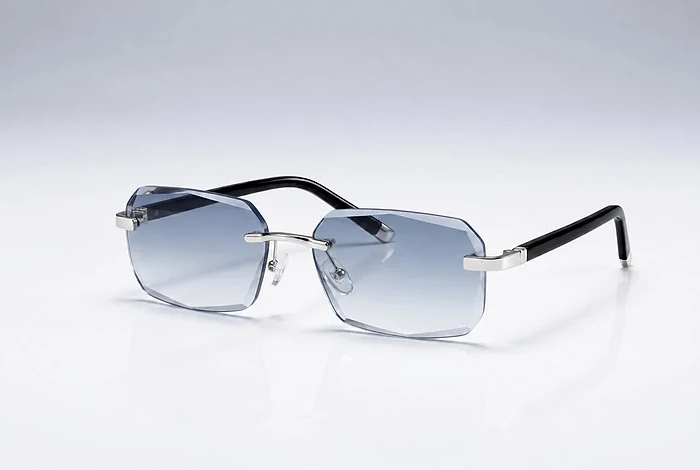
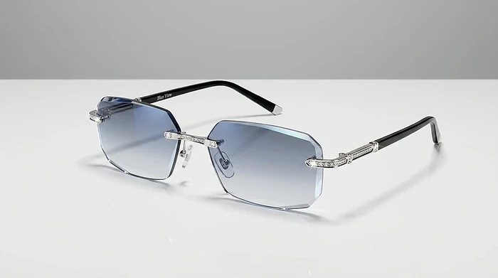

What Is BlueLume And How Does It Work?
BlueLume Glasses are a pair of lightweight, rimless glasses sold online as "adaptive" eyewear. According to the official website, they are designed to help you see both near and far with one pair, so you no longer need to switch between reading glasses, distance glasses and sunglasses during the day.
The seller describes an "Auto-Adjust Lens System" meant to support near, intermediate and distance viewing. You look through the lenses as usual, and as your eyes move from a phone or book to a TV or road sign, the lens system is said to provide the focus needed for that distance. The site adds photochromic lenses that darken in bright sunlight and clear up indoors, a blue light filter for screens and a frame weighing under one ounce.
The presell article says optical engineers with medical and aerospace backgrounds built the lens system and that "doctors are calling adaptive lenses the next evolution", but it names no engineer, doctor, study or patent.
It is important to read the fine print. The order page itself states that BlueLume is a consumer eyewear product, not a medical device, that it is not intended to diagnose, treat or prevent any vision condition, and that it is not a substitute for a professional eye exam. The website does not explain the lens technology in technical terms, such as whether it uses a progressive or multifocal design, and lists no lens power or prescription range.
In practice, ready-made glasses with a fixed lens design cannot match an individual prescription, especially for people with astigmatism or different strengths in each eye. Blue light filtering may make long screen sessions feel more comfortable for some people, but research on its benefits is mixed. Results will differ a lot from person to person, and regular eye exams remain important for eye health.
BlueLume Features
According to the official website, BlueLume Glasses offer:
Auto-Adjust Lens System: designed to support near, intermediate and distance viewing.
Photochromic lenses: darken in bright light and clear indoors.
Blue light filtering: aimed at screen-related eye fatigue.
Under one ounce: rimless frame for all-day wear.
Everyday durability: described as built to handle bumps and drops.
One pair: meant to replace readers, distance glasses and sunglasses.
The product photos show a rimless pair with octagonal blue-tinted lenses, a silver metal bridge and hinges and black temples. One image shows a version with sparkling stones on the hinges and the words "Blue View" on the temple, while the order page shows a plainer frame, so the exact design you receive may differ from some pictures.
The website does not list lens material, lens power, frame sizes, UV rating or any test data for the photochromic and blue light functions. It also does not say whether the glasses come with a case or cleaning cloth, or whether replacement nose pads are available.
BlueLume How To Use
According to the official website, there is nothing to set up: put the glasses on and look through the lenses as you normally would while reading, using a computer, watching TV, shopping or driving. The lenses are said to adapt as your focus shifts, and the photochromic tint is meant to darken automatically outdoors and clear indoors.
Before relying on any non-prescription glasses, it is a good idea to have a current eye exam. An optometrist or ophthalmologist can tell you whether ready-made multi-distance lenses are suitable for your eyes, and can check for conditions such as glaucoma, cataracts or macular degeneration that glasses cannot fix.
Give your eyes time to get used to new glasses. Try them at home first, for reading and screen work, before wearing them outdoors. Be careful on stairs and curbs until you know how the lenses behave when you look down.
Do not drive with new glasses until you are sure your distance vision is clear and sharp, and remember that photochromic lenses often darken less behind a car windshield, which blocks much of the UV light that triggers them. If you notice headaches, eye strain, double vision or dizziness, stop wearing the glasses and talk to an eye care professional.
BlueLume – Refund Policy
According to the official order page, BlueLume Glasses come with a 90-day money-back guarantee. The seller states that you can send the item or items back in the original packaging to receive a full refund or a replacement, less shipping and handling.
This means the original shipping cost is not refunded, and you will likely pay for return postage too. Keep the case, box and any packaging until you are sure you want to keep the glasses, since the guarantee asks for returns in the original packaging.
The order page shows the name Lensera in its copyright line and lists a customer service phone number, 1-888-828-3135. At the time of our review, the contact and terms pages on the BlueLume domain did not load, so read the current refund and shipping terms carefully on the order page before you buy.
Ninety days is enough time to test the glasses in different situations, such as reading, computer work, watching TV and outdoor light. Note the delivery date, keep the order confirmation email and order number, and if you decide to return them, ask customer service for written return instructions and the right return address. Use a trackable shipping method and keep the receipt until the refund appears on your statement.
BlueLume Customer Reviews
-
Paul K., 58Verified Purchase
"I used to carry two pairs everywhere. One for reading and another for driving. Now I wear the same pair throughout the day and switch between near and far without changing glasses."
-
Greg H., 51Verified Purchase
"I was skeptical at first, but they have quickly become the glasses I wear most often. They are lightweight, comfortable, and automatically darken when I go outside. I no longer need separate reading glasses and sunglasses everywhere."
-
Rebecca B., 53Verified Purchase
"Read a menu, then look across the room, without grabbing another pair."
BlueLume – Where To Buy
BlueLume Glasses are sold through the official website at bluelumeglasses.com, which has an article page about the glasses and an order page. The offer is aimed at customers in the United States, Canada, the United Kingdom, Ireland, Australia and New Zealand.
Rimless glasses with a very similar octagonal blue-tinted look, as well as "auto-focus" or "adjustable" readers, are sold by many brands on large marketplaces. If you buy a look-alike elsewhere, you cannot be sure it has the same lenses, and the 90-day guarantee from the official seller will not apply.
The official article uses urgency such as "today only", low-stock notices and a story about big optical companies. Its own disclosure says the site is an advertisement rather than a news publication and that people shown in photos are models. Don't let that rush you. Before you order, check the order summary, the quantity, the shipping address and the refund terms, and make sure you are on the bluelumeglasses.com domain.
To ensure you’re getting the authentic product, most users choose to visit the official website.
Is BlueLume A Scam?
Based on the information available, there is no sign that BlueLume is a scam in the sense of a store that takes orders and ships nothing. The glasses are sold through an official website with an order page, a 90-day money-back guarantee and a customer service phone number.
On the plus side, the frame is light, the photochromic tint and blue light filter add convenience, and the order page is honest in its fine print that the glasses are not a medical device and do not replace an eye exam.
There are, however, points that deserve attention. The "Auto-Adjust Lens System" is not explained technically, no lens power or prescription range is given, and the claim that doctors call adaptive lenses "the next evolution" names no doctor or study. The site's own disclosure calls it an advertisement with models in the photos, the same short review names appear on other product pages from the same network, and some product images show a different frame design than the order page. The contact and terms pages did not load during our review.
Refunds exclude shipping and handling.
If you see BlueLume as a convenient everyday pair for general use and still keep your regular eye exams and prescription glasses where needed, ordering from the official website with the 90-day guarantee is a reasonable low-risk test. People with a strong or uneven prescription should ask an eye care professional first.
For those who want to verify product details or check current availability, the official BlueLume website remains the safest option.
